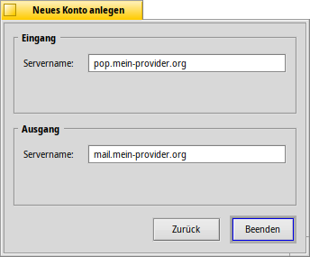
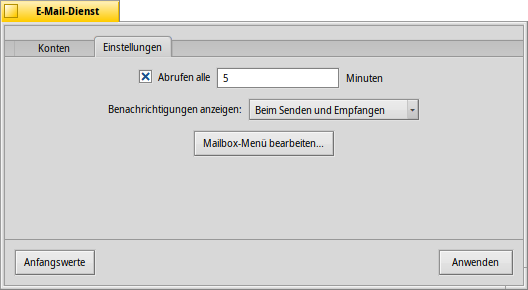
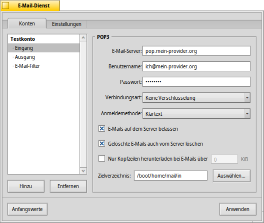
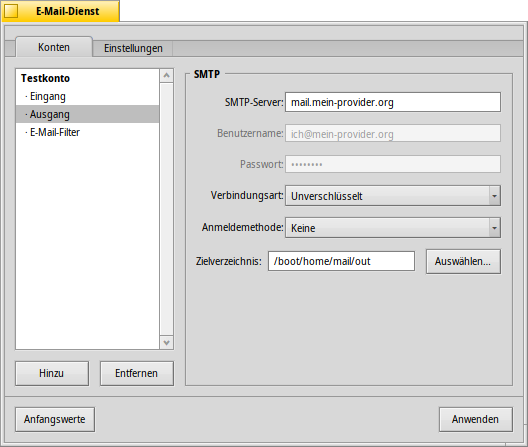
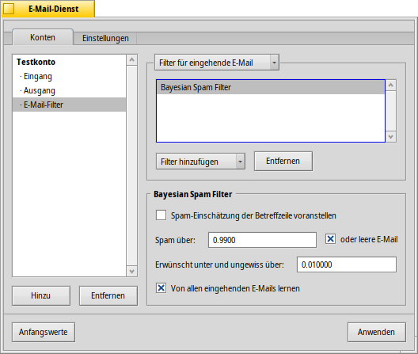
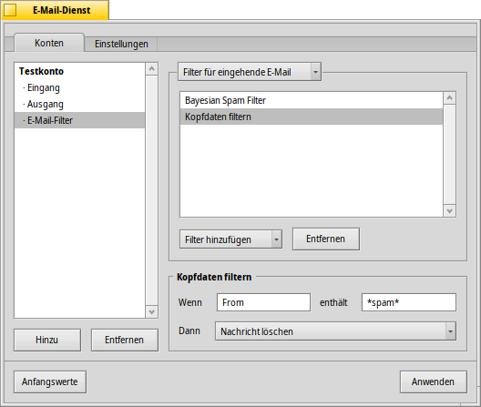
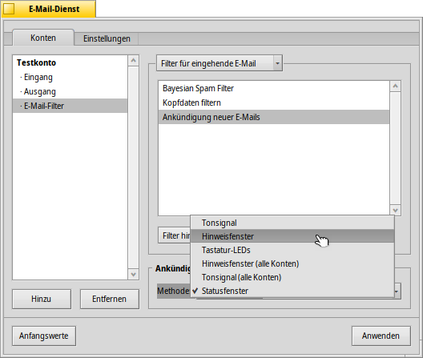

Deutsch
Deutsch Français
Français Italiano
Italiano Русский
Русский Español
Español Svenska
Svenska 日本語
日本語 Українська
Українська 中文 ［中文］
中文 ［中文］ Português
Português Suomi
Suomi Slovenčina
Slovenčina English
English| Index |
|
Neues E-Mail Konto anlegen Kontoeinstellungen Einstellungen für eingehende Mails Einstellungen für ausgehende Mails Einstellungen für E-Mail Filter Der Mail Service |
 E-Mail-Dienst
E-Mail-Dienst
| Deskbar: | ||
| Ort: | /boot/System/preferences/E-Mail-Dienst | |
| Einstellungen: | ~/Konfiguration/settings/Mail/* |
In Haiku wird der Empfang und Versand von E-Mails vom Mail Service (auch mail_daemon genannt) gehandhabt. Dieser Systemdienst kümmert sich darum, dass eingegangene Mails als Datei gespeichert werden und die Attribute zu dieser Datei aus den entsprechenden E-Mail Informationen befüllt werden. So können die E-Mails von jedem Programm oder vom Benutzer direkt verwendet werden und ein Wechsel des Mail-Programms ist jederzeit möglich.
Die Konfiguration des Mail-Verkehrs wird in den E-Mail-Dienst-Einstellungen vorgenommen.
 Neues E-Mail Konto anlegen
Neues E-Mail Konto anlegen
Im Folgenden werden die einzelnen Schritte erklärt, um ein neues E-Mail Konto anzulegen:
Im Programmfenster der E-Mail Eigenschaften als erstes unten auf klicken, um ein neues, noch unbenanntes Mail-Konto anzulegen. Es folgt dieser Dialog:
Zuerst ist der Konto-Typ festzulegen: oder .
Dann ist die verwendete E-Mail-Adresse einzugeben, sowie der Login-Name und das Passwort für das Mail-Konto am Server. Der Kontoname bezeichnet das E-Mail Konto in der Liste aller Konten, der Benutzername wird als Absender einer E-Mail angegeben.
Haiku kennt einige der großen E-Mail Provider, so dass die notwendigen technischen Einstellungen wie IP-Adresse und Servername bereits automatisch ausgefüllt werden. Wenn das nicht möglich ist, oder die Daten angepasst werden müssen, kann man dazu nach Klicken auf wie nachfolgend beschrieben vorgehen.
Zunächst werden Servername, Anmeldemethode und Verbindungsart für eingehende E-Mail, darunter für ausgehende E-Mail angegeben. Die dazu nötigen Informationen sollten sich auf der Webseite des E-Mail Providers finden lassen.
Mehr Informationen zu den verschiedenen Einstellungen und weiteren Optionen im Folgenden.
Kontoeinstellungen
Durch Auswählen eines Kontonamens in der Liste links können einige allgemeine Einstellungen vorgenommen werden:
Der Kontoname ist die Bezeichnung, unter der ein Konto beispielsweise in der Übersichtsliste aller Konten in den E-Mail-Dienst Einstellungen auftaucht. Benutzername ist der Absendername, den ein Empfänger beim Erhalt einer Nachricht sieht. Unter E-Mail-Adresse wird die Adresse angegeben, an die eine Antwort geschickt werden soll. Üblicherweise ist das die selbe Adresse, von der die E-Mail auch gesendet wurde.
Soll ein E-Mail Konto nur zum Senden oder nur zum Empfangen von E-Mails genutzt werden, lässt sich dies durch Rechtsklick auf den Kontonamen in der Liste links einstellen. Durch Entfernen des Hakens vor Eingang beziehungsweise Ausgang lässt sich ein Konto auf eingehende beziehungsweise ausgehende E-Mail beschränken.
Einstellungen für eingehende Mails
Mit einem Klick auf unter dem Kontonamen, lassen sich Einstellungen zum E-Mail Empfang vornehmen.
Erster Eintrag ist die Adresse für eingehende E-Mails. Falls ein Provider einen bestimmten Port beim Anmelden verlangt, wird dieser mit einem vorangestellten Doppelpunkt an die Adresse angehängt, wie zum Beispiel pop.dein-provider.org:1400.
Anschließend werden die benötigten Anmeldeinformationen eingetragen: Benutzername und Passwort - falls nötig muss die Anmeldemethode von der Standardeinstellung auf für die Authentifizierung umgestellt werden.
Bei Verwendung des POP3-Protokolls für eingehende E-Mails kann die Option eingeschaltet werden. So kann auch von einem anderen Computer aus auf die Mails zugegriffen werden. Mit werden die E-Mails erst dann auf dem Server gelöscht, wenn sie auch auf dem Rechner entfernt werden.
Sollte stattdessen IMAP als Übertragungsprotokoll verwendet werden, steht nur die Option zur Verfügung. Zusätzlich kann man noch angeben, um nur von einem bestimmten Postfach und dessen Unterverzeichnissen die E-Mails zu synchronisieren.
Außerdem kann man durch Aktivieren der Option bestimmen, dass E-Mails lediglich teilweise (bis zu einer bestimten Größe) heruntergeladen werden. Dadurch werden von Mails, die größer als der eingestellte Wert sind, nur die Kopfzeilen heruntergeladen. So kann man erstmal die Betreffzeile und Absender prüfen, bevor man den Rest der Nachricht plus eventuelle Anhänge runterlädt. Die Einstellung ist vor allem bei langsamen Netzwerkverbindungen sinnvoll.
Der Speicherpfad für das lokale Postfach ist unter Zielverzeichnis eingetragen (Standard ist /boot/Benutzer/mail/in/) und kann jederzeit geändert werden. Dies ist sinnvoll, wenn man für jedes E-Mail Konto ein eigenes Unterverzeichnis verwenden möchte. Zwingend notwendig ist es aber nicht, denn über die "Queries" - Haikus mächtige Suchfunktion - kann man gleiches erreichen.
Einstellungen für ausgehende E-Mails
Unter lassen sich für jedes Konto Einstellungen zum E-Mail Versand vornehmen.
Als erstes ist die SMTP-Server Adresse anzugeben. Wie beim Mail-Server für eingehende E-Mails beschrieben, kann hier wenn nötig ein spezieller Port angegeben werden: mail.dein-provider.org:1200.
Falls man sich am SMTP-Server mit Benutzernamen und Passwort anmelden muss, kann man diese angeben, wenn man die Anmeldemethode auf stellt. Die andere Möglichkeit ist für Provider, die festgelegt haben, dass man nur unmittelbar nach einem Post-Abholen auch Versenden kann.
Genauso wie bei eingehenden Mails kann der Speicherpfad für ausgehende E-Mails unter Zielverzeichnis vom Standard /boot/Benutzer/mail/out/ in einen anderen geändert werden.
Ankündigung neuer E-Mails und andere Filter
Benachrichtigungsmöglichkeiten bei neuen E-Mails und Methoden E-Mails zu sortieren und zu filtern finden sich unter dem jeweiligen Kontonamen in . Eine beliebige Anzahl von Filtern kann erstellt werden, die dann der Reihe nach angewendet werden. Ihre Reihenfolge lässt sich durch Verschieben per Drag&Drop an eine andere Position in der Liste verändern.
Zur Zeit gibt es drei . Nach Hinzufügen eines Filters kann dieser in der Liste ausgewählt werden, um dessen Optionen ansehen und einstellen zu können.
Spamfilter (AGMS Bayesian)

Spam-Filter verwenden Methoden der Statistik, um E-Mails zu klassifizieren. Jeder Mail wird dabei ein Wert zwischen 0 und 1 zugewiesen, wobei man selbst festlegt, ab welchem Wert eine Mail als Spam gilt. Der errechnete Wert kann, durch Setzen des entsprechenden Hakens, der Betreffzeile vorangestellt werden.
Der Spam-Filter kann auch so eingestellt werden, dass er anhand eingehender E-Mails dazulernt und sich dadurch immer weiter verbessert. Ein gezieltes Training auf erkannte Spam-Mails und Mails, die fälschlicherweise als Spam kategorisiert wurden, kürzt den Lernprozess ab. Mehr dazu im Abschnitt zum Programm E-Mail der Dokumentation.
Zusammen mit einer können erkannte Spam-Mails automatisch aussortiert werden.
Filterregel

Dieser Filter vergleicht die Kopfzeilen einer Mail mit vorgegebenen Werten und führt dann entsprechend die in der Filterregel festgelegte Aktion aus.
Im ersten Textfeld gibt man die zu prüfende Kopfzeile an. Möglich sind diese Werte:
| der Name des Absenders | ||
| die eingetragene E-Mail Adresse des Absenders | ||
| die Empfänger-Adresse | ||
| die Antwort-Adresse | ||
| das Datum / die Uhrzeit des Mail-Empfangs | ||
| die Betreffzeile | ||
| für Adressen, die unter CC: (Empfänger einer Mail-Kopie) eingetragen sind. | ||
| der Name des Mail-Kontos | ||
| der Status der E-Mail; normalerweise kann er "Read" (gelesen), "Replied" (geantwortet), "Sent" (gesendet), "Forwarded" (weitergeleitet) oder "New" (ungelesen) sein - eingehende Mails sind naturgemäß immer "New". | ||
| der Marker über die Wichtigkeit der Mail (wird - wenn überhaupt - vom Versender vergeben). | ||
| grundsätzlich das gleiche wie die Betreffzeile, jedoch ohne eventuell vorangestelltes "Re:", "FW:", oder ähnliches. | ||
| je nach dem, als was der Spam-Filter die Mail klassifiziert hat, ist dieser Wert entweder leer (wenn kein genauer Wert errechnet werden konnte), "Genuine" für erwünschte Mails oder "Spam". | ||
| der errechnete Wert des Spam-Filters für diese Mail; dieser Wert wird in wissenschaftlicher Schreibweise notiert, so steht zum Beispiel 1.065e-12 für 1,065/(10^12), also für "1,065 dividiert durch 10 hoch 12" - was ausgeschrieben 0,000000000001065 ergibt. |
Das zweite Textfeld ist für das Suchmuster. Hier können "reguläre Ausdrücke" - sogenannte Reguläre Ausdrücke - verwendet werden. Damit erreicht man zwar eine sehr hohe Flexibilität bei den Suchmustern, unglücklicherweise sind reguläre Ausdrücke aber nicht leicht anzuwenden. Ein wenig Einarbeitung ist es aber wert und einfache reg_ex sind auch nicht zu schwer.
Über das Menü darunter lässt sich eine Aktion ausführen, wenn das Suchmuster erkannt wurde. So kann der Status der Mail verändert, oder die Mail an sich verschoben oder direkt gelöscht werden.
Ankündigung neuer E-Mails

Wie man über den Eingang neuer Nachrichten informiert werden möchte, lässt sich als unter mehreren Möglichkeiten auswählen, die sich auch kombinieren lassen:
| Keine Benachrichtigung | ||
| Spielt bei jeder neuen E-Mail die Klangdatei ab, die für das Ereignis "New E-mail" in den Klänge Einstellungen ausgewählt wurde. | ||
| Blendet bei jeder neuen E-Mail ein Hinweisfenster ein. | ||
| Lässt einige LEDs wie zum Beispiel für die Feststelltaste aufleuchten. | ||
| Zeigt ein Hinweisfenster für alle neuen E-Mails an. | ||
| Spielt die Klangdatei für das Ereignis "New E-mail" aus den Klänge Einstellungen einmal bei neuen E-Mails ab. | ||
| Zeigt das Statusfenster an. |
Filter für ausgehende E-Mail
Aktuell gibt es für ausgehende Mails nur einen Filter: Fortune.
Dieser Filter hängt an den E-Mail Text ein zufällig ausgesuchtes Zitat oder eine Text ähnlich einem Glückskeks. Wenn man diesen Filter vorher ausprobieren möchte, kann man den Befehl fortune auch direkt im Terminal eingeben.
Der E-Mail-Dienst
Nach der Konfiguration eingehender und ausgehender Mailserver, sowie eventuellen Filtern, muss dem E-Mail-Dienst, der das ganze Holen und Senden erledigt, noch gesagt werden wie und wann das zu geschehen hat.
Unter E-Mail abfragen legt man fest, in welchen Zeitabständen der Mailserver kontaktiert werden soll.
Wenn man seine Netzwerkverbindung über eine Wählverbindung aufbaut, ist es ratsam und auszuwählen, damit nur dann E-Mails abgefragt werden, wenn sowieso schon eine Netzwerkverbindung besteht und ausgehende Mails zurück gehalten werden, um keine unnötigen Einwähl-Entgelte zu verursachen.
Der E-Mail-Dienst kann entweder , , oder ein Statusfenster anzeigen.
Nur wenn der mail_daemon schon während dem Hochfahren gestartet wird (), werden E-Mails automatisch empfangen und versendet.

öffnet das Verzeichnis ~/Konfiguration/Mail/Menu Links/. Alle Ordner oder auch Queries(!) - beziehungsweise Verknüpfungen hierzu - erscheinen im Kontextmenü des E-Mail-Dienst Icons in der Deskbar.
Über dieses Kontextmenü kann man auch eine neue , sofort nach neuen E-Mails schauen (), oder die E-Mail-Dienst aufrufen.
Hält man beim Aufrufen des Kontextmenüs SHIFT gedrückt, erhält man Zugriff auf weitere Befehle:
| Öffnet ein Untermenü, um E-Mails nur für ein bestimmtes Konto abzurufen. | ||
| Ermöglicht es E-Mails zu senden, ohne dabei auch neue Nachrichten abzurufen. | ||
| Beendet die gesamte E-Mail-Infrastruktur (mail_daemon). |
Das Icon selbst zeigt an, ob sich im Posteingang ungelesene E-Mails (mit dem Status "New") befinden. Dann liegt ein kleiner Umschlag im Briefkasten.